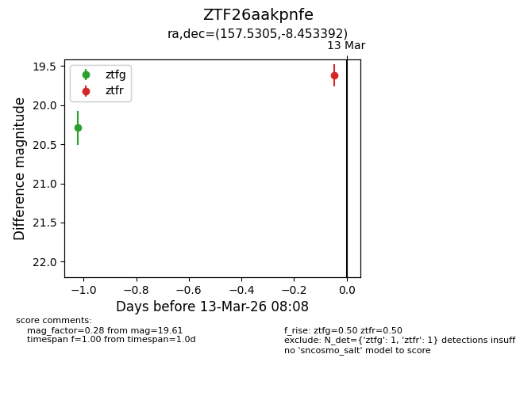
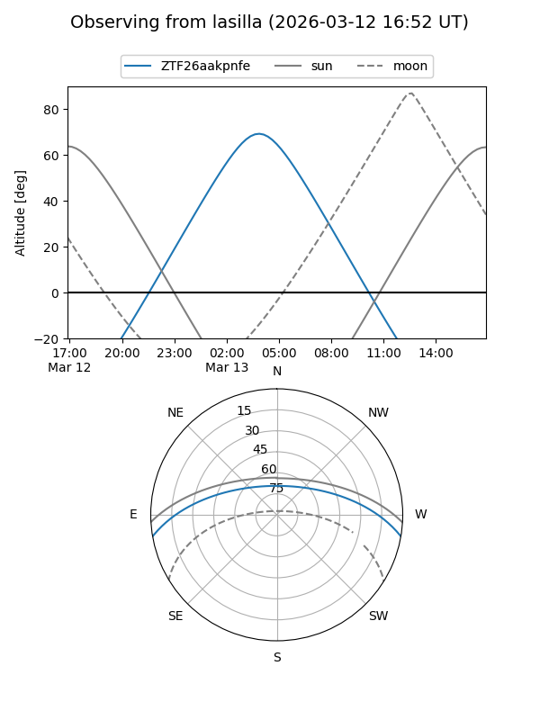
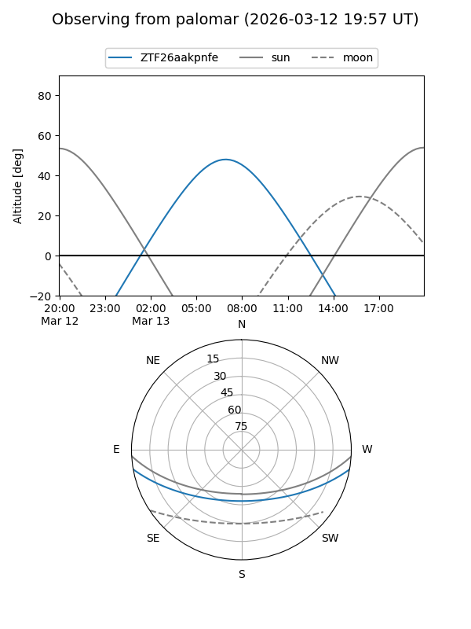

ZTF26aakpnfe
Target ZTF26aakpnfe at 2026-03-13 08:10
Aliases and brokers:
FINK: link
Lasair: link
ALeRCE: link
alt names
ZTF26aakpnfe (ztf,fink_ztf)
Coordinates:
equatorial (ra, dec) = 157.5305,-8.45339
equatorial (HMS+DMS) = 10:30:07.31,-08:27:12.21
galactic (l, b) = (254.0220,+40.63002)
Flags:
Photometry:
last ztfg=20.29, ztfr=19.61
1 ztfg, 1 ztfr detections
Lightcurve

Visibility


Additional plots